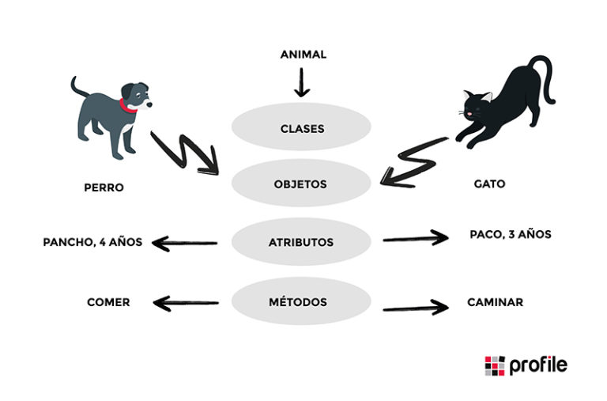
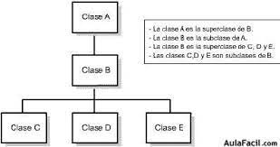
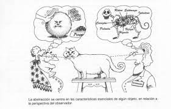

Programacion Orientada A Obejetos
La Programación Orientada a Objetos (POO) es un paradigma de programación, es decir, un modelo o un estilo de programación que nos da unas guías sobre cómo trabajar con él.

Clases, objetos e instancias
El primer y más importante concepto de la POO es la distinción entre clase y objeto. Una clase es una plantilla. Define de manera genérica cómo van a ser los objetos de un determinado tipo.

Beneficios de Programación Orientada a Objetos
Reutilización del código. Convierte cosas complejas en estructuras simples reproducibles. Evita la duplicación de código.

La abstracción
La abstracción es cuando el usuario interactúa solo con los atributos y métodos seleccionados de un objeto, utilizando herramientas simplificadas de alto nivel para acceder a un objeto complejo.